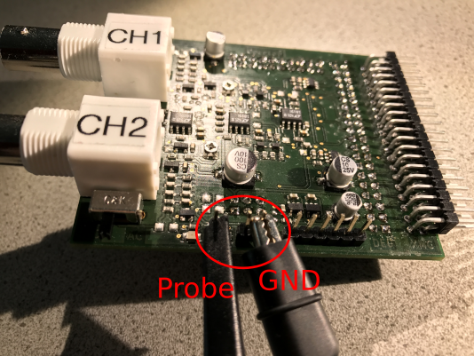

Probe Compensation
In order to ensure an accurate measurement result it is necessary to perfom a probe compensation. Connect the FPGA Board and the OpenLab hardware according to the description in the Hardware chapter. Finally connect the probe to the provided pin headers illustrated in the figure below.
Start the OpenLab Oscilloscope application and select in the menubar Settings->Channel. The figure below shows the required Channel Settings dialog for the probe compensation.

Make sure no settings in the sections 'Channel 1' and 'Channel 2' were changed! Enable the check box 'Start Probe Compensation' and click apply. Now you are able to adjust the probe accordingly.
After the successful probe compensation no further steps are required and you can start with your measurements.